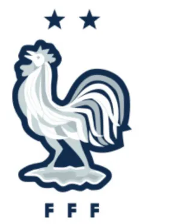
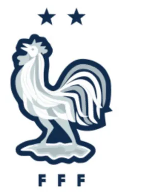

La Mejor Final de todos los tiempos:
Catalogada como la mejor final de todos los tiempos por la prensa internacional, así se vivió la final donde Argentina se consagró campeón del mundo por tercera vez. El equipo de Scaloni salió a la comerse la cancha desde el primer minuto, controlando el balón, presionando a Francia en su propia área. Durante 79 minutos Argentina dominó y maniató a Francia. La figura fue el equipo: El Dibu Martínez atajando una pelota "mano a mano" a Kolo Muani en el minuto 123 del tiempo extra. Nahuel Molina y Tagliafico cortaron muy bien los laterales. Otamendi y el cuti Romero no dejaron jugar al atacante francés Giroud, tan así que a los 40 minutos del primer tiempo lo cambiaron. De Paul, Enzo Fernández y Mac Allister se apoderaron de la mitad de la cancha, no dejando jugar a Griezmann. Di María por izquierda, como pocas veces visto volvió loco a la defensa de Francia, generando la jugada del penal que Messi convirtió en el primer gol del partido a los 23 minutos. Luego, a los 36 minutos, en una combinación rápida y de tres toques: Messi, Julián Álvarez y Mac Allister asistiendo, Di María mano a mano definió de contra pique ante la salida de Lloris. A los 80 minutos con un pelotazo, Otamendi se confió y terminó cometiendo penal que Kylian Mbappe convirtió. Eso puso a Francia en partido, que un minuto más tarde empató con un remate de volea de su figura Mbappe. Los últimos 10 minutos fueron para el infarto. Francia tuvo otra chance mas con un cabezazo que se fue desviado y Messi pudo haber sentenciado el partido pero el arquero francés se lució y tiró la pelota al córner.
Tiempo Extra:
En el tiempo extra, se volvió a ver a la Argentina en modo arrollador. Al minuto 108, luego de un pelotazo de Montiel, combinando Messi y Enzo Fernández dejaron sólo a Lautaro Martínez que remató y Lloris dio rebote, al cual tomo Messi y puso el 3 a 2. Parecía que todo terminaría así, pero en un córner en el minuto 118, Mbappe remató al arco y Montiel se dio vuelta pero la pelota terminó pegando en su brazo y él árbitro sin dudarlo cobró penal. Mbappe puso la igualdad y sólo quedaban dos minutos más la adición del árbitro. La última la tuvo Francia en los pies de Kolo Muani quedando mano a mano con el Dibu, y en una rápida salida le ahogó lo que pudo ser la victoria para Francia. La final mas emocionante de la historia se iba a definir por penales.
Penales definen al campeón:
Arrancó pateando Francia: Mbappe convirtió aunque el Dibu se estiró y alcanzó a tocar la pelota. Argentina empató con Messi y la pelota entrando con suspenso. A partir de ahí, empezó el "Show del Dibu Martínez": El siguiente en patear era Coman y el Dibu le adivinó la intención y detuvo su remate. Dybala adelantó a la selección 2 a 1 en penales. Le tocaba a Tchouameni para Francia. El Dibu le tiró la pelota para ponerlo nervioso y lo consiguió: Erró su penal tirando la pelota afuera del arco. Paredes puso a Argentina a tiro del título mundial, convirtiendo su penal. Ahora para Francia venía el turno de Kolo Muani. Sí, el mismo que había perdido una situación inmejorable para ganar el partido en el último minuto. El Dibu trató de ponerlo nervioso pero no lo logró y Kolo Muaniconvirtió. Argentina ganaba 3 a 2 y tenía dos penales más. Sí convertía Montiel (sí Montiel, a quien le había cobrado el penal por la mano en el área Argentina) lograríamos el tercer campeonato mundial. Montiel fue convenido de donde iba a colocar la pelota, y.... GOL!!!!! ARGENTINA CAMPEON DEL MUNDO!!! Pasaron 36 años desde el último título con Maradona a la cabeza, y ahora era Messi quién nos llevaba a tocar el cielo con las manos y a convertirse en Leyenda para siempre...
 
